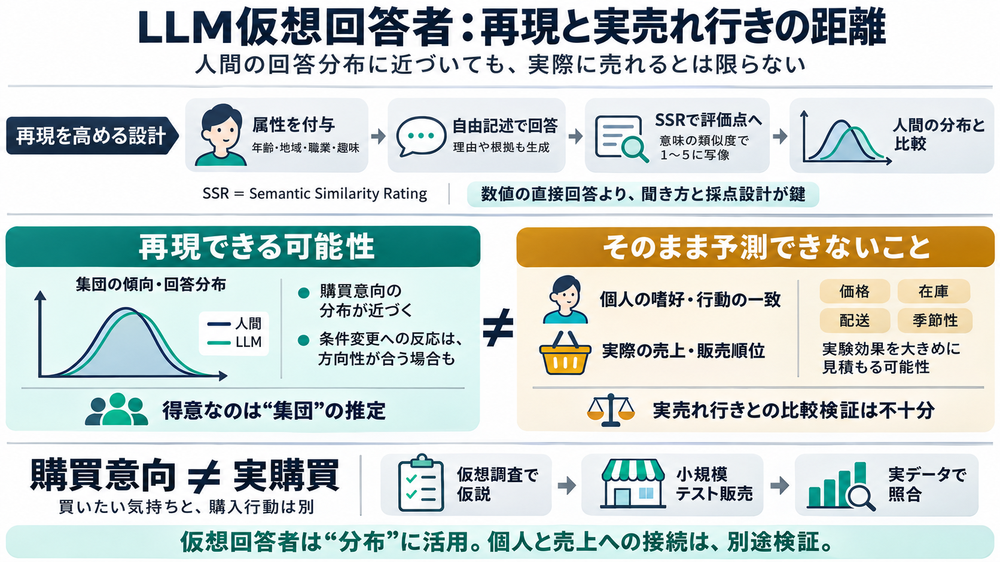

LLMs Reproduce Human Purchase Intent via Semantic Similarity Elicitation of Likert Ratings
extensive dataset comprising 57 personal care product surveys conducted by a leading corporation in that market (9,300 h…

LLMを“仮想回答者”へ
LLMに属性を与えてアンケート回答を生成し、人間の回答分布をどこまで再現できるかを検討する研究の要点を整理します。
別問題として分ける
「人間のアンケート回答分布」を再現できることと、「実際の購買（売れ行き）」を予測できることは別問題です。前者は近づけても、後者は追加検証が必要です。
前提：属性（年齢・地域・職業・趣味など）を与え、“その人物の立場”で回答を生成する。
聞き方が鍵
数値だけで聞くより、文章（根拠込み）で回答させ、その意味を評価基準に対応させる発想が中心です。
モデル化の流れ
LLMで仮想回答者を作るには、質問文の与え方と、回答→評価への写像（採点設計）をセットで考えます。
集団の一致
自由記述×意味的類似度（SSR）の組み合わせで、購買意向の“分布”が人間の回答に近づく可能性が示されています。
強いのは“平均”
仮想回答者は集団傾向に強い一方、過去の経験や具体的行動に基づく“個人レベルの一致”は下がりやすいとされています。
方向性は合う
実験条件を変えたときの回答差（実験効果）について、人間と同程度の相関が得られた報告があります。ただし効果を大きめに見積もる癖も示唆されます。
日本向けに現実化
NVIDIAの日本向け合成ペルソナデータを使うと、国内条件を織り込んだ仮想サンプル設計がしやすくなります。
補足（JP/EN）: 合成ペルソナ＝「Synthetic persona（合成ペルソナ）」
意向 ≠ 購買
投稿の重要ポイントは、購買意向（自己申告）と、実購買（行動結果）を分けて考えることです。
未検証のギャップ
紹介範囲では、仮想回答者の一致度から実売れ行き（売上や順位）を精度よく予測できるかの比較検証は十分ではない、と明記されています。
所感の要点
結論：可能性提示は妥当だが、実務導入には検証設計が不可欠。
持ち帰る一文
LLMによる仮想アンケートは人間の回答分布をかなり再現し得るが、個人や実売れ行きへの接続は別途検証が必要です。
extensive dataset comprising 57 personal care product surveys conducted by a leading corporation in that market (9,300 h…
つの条件のプロフィールがおよそ重なり、社会的望 ましさに伴う変化が抑えられていることがわかる。 4 / 6 さらに重要なのは、 あらかじめ設定した合成ペルソナの特徴がおおむね保たれていた点です。 これは提案手法が、ペルソナのもつ特性の情報を…
しかし、この伝統的な調査手法には大きなコストがかかります。さらに、調査結果の信頼性にも課題があり、得られるデータには「ノイズ」が混じっているのです。 ここ数年、こうした状況を変える可能性を秘めた技術としてLLMは注目されています。たとえば…
### インタビューはバイアスを減らす バイアスは、人口統計学的パリティ差と呼ばれる指標を用いて測定された。この指標は、モデルの精度が最も高かったグループと最も低かったグループの間で、モデルのパフォーマンスがどの程度異なるかを定量化するも…
図4. 正答率の比較 さらに、小売店舗で利用者の好みに合った新商品の選定に関する実証実験として、株式会社Relic が運営 する小売店舗※2 において、発注担当による選定、一般的なLLM による選定、本技術を活用した選定の3 つの 手法を用…